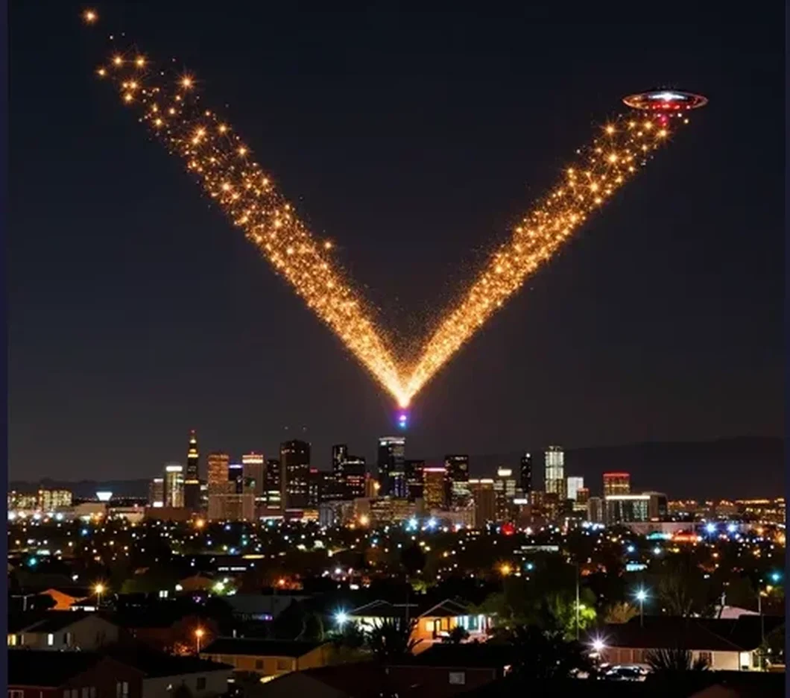

The Phoenix Lights: Arizona's Massive 1997 UFO Sighting

Lights over Paulden
It was the evening of March 13, 1997, in Arizona. At about 8:15 PM, a former police officer in the small town of Paulden looked up. He saw a cluster of reddish-orange lights.
He was not alone. Between about 7:30 and 10:30 PM Mountain Standard Time, thousands of people watched strange lights. They lived all along a stretch of about 300 miles, from the Nevada border south through Phoenix and on toward Tucson.
Police stations got hundreds of calls that night. Several people filmed the lights. Many witnesses said that the lights moved without any sound.
The event came to be called the Phoenix Lights. A debate began that has not ended. What did the people of Arizona really see?
Two events, one night
To find an answer, we must first notice something that is often forgotten. There were really two different events on the same evening. They happened at different times and looked very different. Mixing them up has caused a lot of confusion.
The first event was a V-shaped formation. Witnesses guessed that it was up to a mile across. People saw it between about 7:30 and 8:45 PM. It began near the Nevada border and moved southeast across the state.
The second event came later, at about 10:00 PM. People saw it mostly in the Phoenix area. It was a row of bright lights that stayed still, or slowly sank. Witnesses described them over the Sierra Estrella mountains, south of Phoenix. These lights did not cross the sky. They appeared and stayed for a while. Then they went out one by one.
The two events have very different possible explanations. Let us take the V first.
The V that hid the stars
Follow the lights across the state. At about 7:55 PM, a witness in Henderson, Nevada, saw a large V-shaped object heading southeast. Around 8:15 PM came the former officer in Paulden. Lights were then reported over Prescott Valley. People in the Phoenix area saw the formation pass overhead between about 8:30 and 8:45 PM.
The witnesses came from every part of Arizona life. They were police officers, doctors, pilots, teachers, retired people, and families. In Prescott Valley, a family said that they first saw the lights from about 65 miles away. In Glendale, near Phoenix, people saw the formation pass overhead, partly hidden by thin clouds.
Witnesses typically described five to seven lights. Many said that the lights made no engine noise. And many said that the lights were not separate points. They seemed to be part of a large, dark, solid shape. As it passed between them and the stars, the stars vanished. Then the stars came back after it had gone by.
Believers say that this suggests one huge object, not a group of separate lights. One of the best-known believers is Dr. Lynne Kitei, a doctor in Phoenix. She helped make a documentary film about the lights. The film argues that they were truly unexplained.
But other people saw something else.
Planes in a triangle?
Skeptics, people who doubt such claims, say that the V was only a group of military planes. Mitch Stanley, an amateur astronomer in Scottsdale, was looking at the sky through a telescope that night. He said that the lights were separate airplanes flying in formation. Skeptics use his words to argue that witnesses mistook ordinary planes for something strange.
Some say that the planes were five A-10 jets that landed at Davis-Monthan Air Force Base at about 8:45 PM. That base is in Tucson.
Other people disagree. They point out that many witnesses heard no engine noise. A formation a mile wide would need a great many planes. They say that many planes would not be silent.
So the sources disagree, and the V is still a puzzle. The second event has an answer that many people accept.
Flares behind the mountains
In the weeks after the event, the military gave an official answer for the still lights. It said that they came from A-10 Warthog planes of the Maryland Air National Guard. The planes were training at the Barry M. Goldwater Range as part of Operation Snowbird. This range is a large military training area in the desert, in southern Arizona. A pilot from the unit, Lieutenant Colonel Ed Jones, confirmed this in 2007.
The A-10s dropped LUU-2B/B flares. These are bright flares that fall slowly on small parachutes.
Now think about the map. The flares were dropped over the range, about 50 to 70 miles from Phoenix. The Sierra Estrella mountains lay between the range and the city. From Phoenix, the lights seemed to hang in the sky above the mountains. Then they winked out behind them, one by one.
Many people accept this answer for the second event. But the flares do not explain the V that crossed northern Arizona earlier in the evening.
A governor’s joke
The story has a surprising turn. Fife Symington III was the Governor of Arizona in 1997. In June 1997, he held a press conference that became famous. His chief of staff, dressed as an alien, was led in front of the cameras. Symington joked that this was the guilty party. He later said that he wanted to calm the public.
Then, in 2007, he surprised UFO researchers. He said in an interview that he had seen the object himself on the night of March 13, 1997.
“I’m a pilot,” he said, “and I know just about every machine that flies. It was bigger than anything that I’ve ever seen.”
His words carried weight. He was a governor, and he said that he knew aircraft. But it was a memory from ten years before. It does not prove what the object was.
Not the first triangle
The Phoenix Lights were not the only case of this kind. From November 1989 to April 1990, many people in Belgium reported huge triangular craft. Police officers were among the witnesses. The craft were said to fly low over the Belgian countryside.
On March 30, 1990, the Belgian Air Force sent up two F-16 fighter jets after an object seen on radar. Neither pilot saw anything. Skeptics say that the radar readings were false signals, and that the wave was mostly a mass delusion.
There are other big sightings in history. In 1942, in the Battle of Los Angeles, guns on the ground fired at an unknown object over the city. In July 1952, radar at Washington, D.C., tracked unknown objects as they moved over the White House and the U.S. Capitol. The Air Force blamed a layer of warm air that fools radar.
Reports of large, silent, triangle-shaped craft keep showing up across decades and continents. Maybe people keep making the same mistake. Or maybe there is something that has not yet been explained.
Two lights, two answers
So the Phoenix Lights were two events. One is well explained. The other is still argued about.
The still lights over Phoenix at about 10:00 PM were very likely flares dropped by A-10 Warthogs on the Goldwater Range. A brightness study of the flares supports this.
The V-shape that crossed Arizona earlier that evening is still argued about. Many witnesses described a huge, silent object that blocked out the stars. Skeptics say that it was a formation of A-10s, as the amateur astronomer saw. Believers say that this does not fit what they saw.
The witness stories agree with each other across many towns. That does not prove what the lights were. But thousands of people looked up on March 13, 1997, like that former officer in Paulden, and they still disagree about what they saw. The lights have faded from the sky. The question is still open.
References & Further Reading
Wikipedia: Fife Symington — The governor's press conference and his 2007 statement
📚 Recommended Reading: UFOs: Generals, Pilots, and Government Officials Go on the Record by Leslie Kean (on Amazon) — As an Amazon Associate, we earn from qualifying purchases.
Editorial note: The still lights at about 10 PM were very likely flares dropped by A-10 jets, but the V-shaped lights earlier in the evening are still argued about. Some say a formation of A-10s explains them, and many witnesses disagree. See our Editorial Policy.